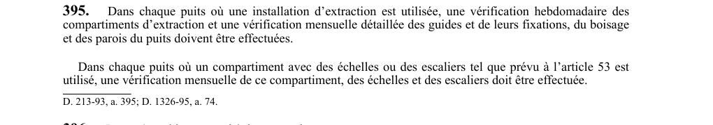

art-395-RSSM : vérification hebdomadaire mensuelle compartiments puits
Un article du wiki ⚖️ Recueil législatif
En bref
Dans chaque puits avec installation d'extraction, une vérification hebdomadaire des compartiments d'extraction et une vérification mensuelle détaillée des guides et fixations. Cette obligation vise l'employeur.
- Du boisage et des parois doivent être effectuées.
- Vérification hebdomadaire : compartiments d'extraction.
- Vérification mensuelle détaillée : guides, fixations, boisage, parois.
- Compartiment à échelles ou escaliers : vérification mensuelle.
🌐 LegisQuébec · 📄 PDF officiel
Texte officiel : capture du PDF

Toucher l'image pour l'agrandir🔗 Voir art. 395 RSSM dans le PDF (page 100)
Version : texte officiel du RSSM (RLRQ c. S-2.1, r. 14), à jour au 1er mai 2024 — Éditeur officiel du Québec
Voir aussi
- art. 393 : toit acier protection dessus transporteur · obligation : un toit en acier d'au moins 4 mm d'épaisseur ou d'une résistance équivalente doit protéger tout travailleur se trouvant sur le dessus d'un transporteur ; dans le cas d'un curseur de fonçage, ce toit doit être soutenu par le curseur et non par le câble d'extraction.
- art. 394 : harnais cordon assujettissement toit transporteur · obligation : le port d'un harnais de sécurité conforme à la norme CAN/CSA Z259.10 et l'utilisation d'un cordon d'assujettissement conforme à la norme CSA Z259.11, relié au câble d'extraction, sont obligatoires pour tout travailleur se trouvant sur le toit d'un transporteur en mouvement.
- art. 396 : inspection puits après chute objet · obligation : lorsqu'un objet est tombé dans un puits, les opérations d'extraction doivent cesser immédiatement, les parties du puits et le câble d'extraction susceptibles d'être endommagés doivent être inspectés.
- art. 397 : inscription registre résultats vérifications puits · obligation : le résultat de toute vérification ou inspection prévue aux articles 395 et 396 doit être noté dans le registre du poste de travail concernant les puits.
- ⚖️ Loi habilitante : LSST
- ↑ Index du bloc : Documents et registres
Pages qui pointent ici (5)
- art-393-RSSM : toit acier protection dessus transporteur Recueil législatif
- art-394-RSSM : harnais cordon assujettissement toit transporteur Recueil législatif
- art-396-RSSM : inspection puits après chute objet Recueil législatif
- art-397-RSSM : inscription registre résultats vérifications puits Recueil législatif
- RSSM : Documents et registres (art. 380 à 400) Recueil législatif